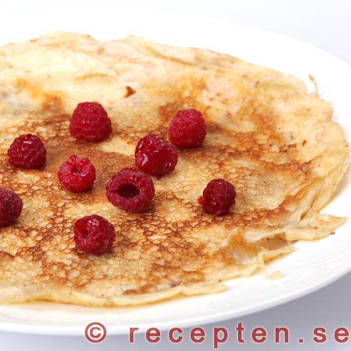
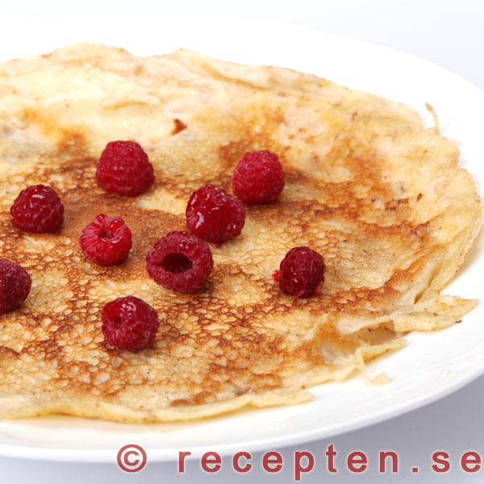
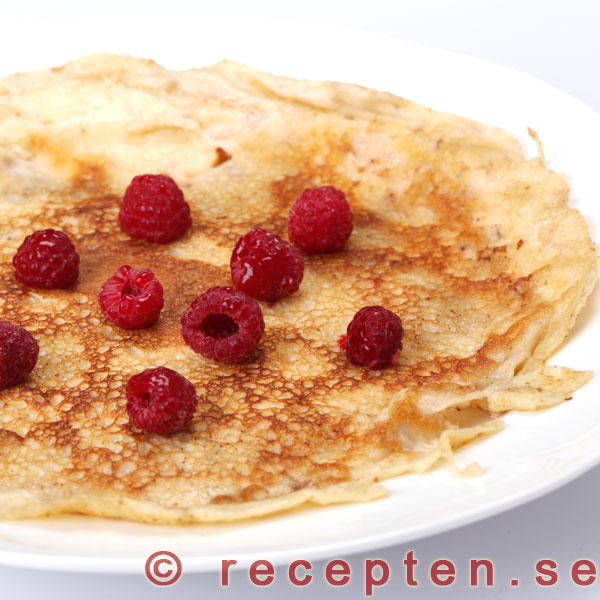

Farmor Britts pannkakor
Gör traditionalla tunna pannkakor genom att.....
Ingredienser
2 1/2 dl vetemjöl
1/2 tsk salt
6 dl mjölk
3 ägg
3 msk smör
sylt eller bär
Gör så här:
Blanda mjöl och salt...
Smält smöret...
Servera med sylt eller bär
 
